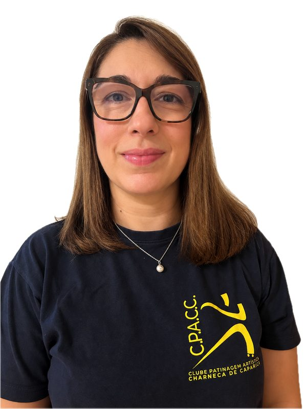
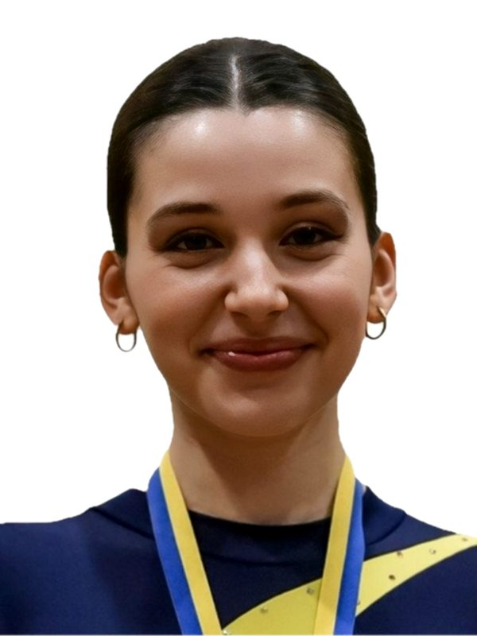
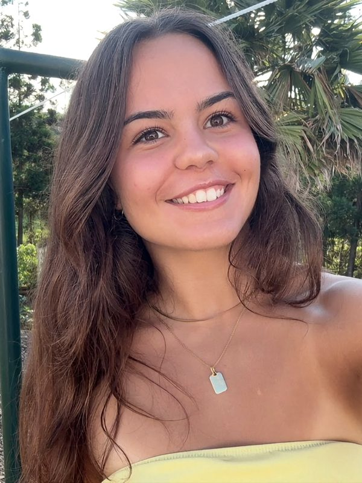
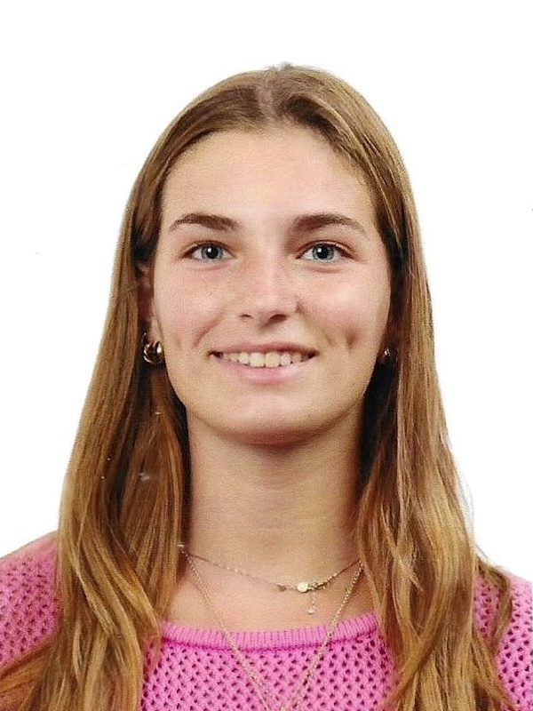
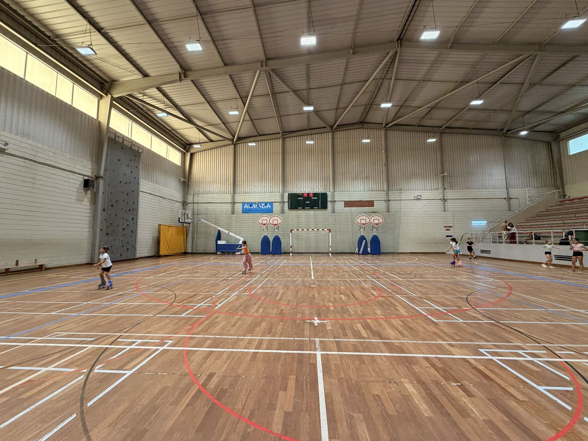
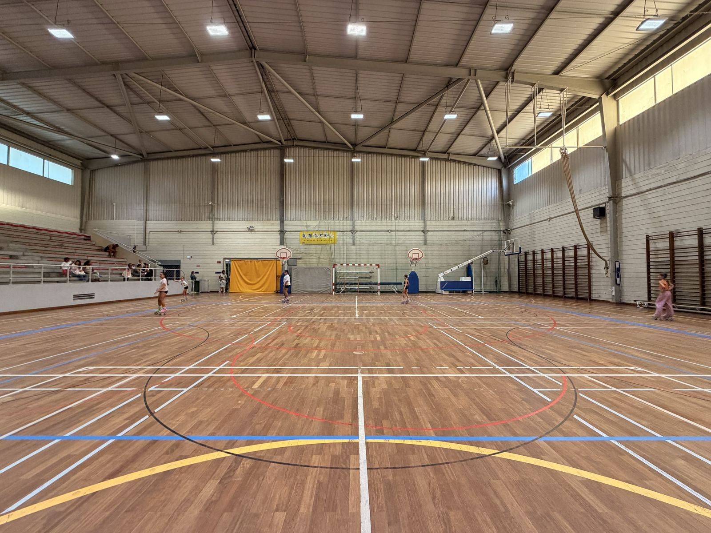

Cada atleta ao seu ritmo
Não empurramos ninguém para a competição. Há espaço para quem quer chegar longe e para quem só quer patinar bem e ser feliz.
Início/O Clube
Quem somos
Fundado na Charneca de Caparica com um propósito claro: dar às crianças do concelho acesso a uma modalidade exigente e formadora, sem terem de procurar fora de Almada.
A nossa história
Fundámo-nos a 28 de outubro de 1999, então associados à Escola do Pinheirinho - hoje Escola Básica e Secundária Carlos Gargaté. O clube foi constituído sobre valores de desportivismo e rigor técnico, que continuam a orientar o trabalho desenvolvido com cada atleta.
Os anos de maior crescimento
Entre 2012 e 2024, sob a presidência do Arquiteto José Quintela, o CPACC viveu o seu período de maior expansão. Foi nesta década que o clube conquistou a Taça de Portugal, em 2013, e passou a marcar presença regular nos Campeonatos Distritais e Nacionais nas disciplinas de Patinagem Livre, Solodance e Show & Precisão - resultados que abriram as portas a diversas competições europeias e, em 2019, aos World Roller Games, em Barcelona, com o atleta Francisco Quintela a representar o clube.
Presidente da Direção · 2012 - 2024
Arquiteto de profissão, foi mais de uma década a lutar pelo Clube de Patinagem Artística da Charneca de Caparica. Sem o seu trabalho e dedicação, o CPACC não existiria na forma como o conhecemos hoje.
Faleceu em 2024, deixando um legado que continua vivo em cada treino.
Após o seu falecimento, o clube atravessou um período de transição. A 30 de janeiro de 2026, Francisco Quintela - no clube como atleta desde 2007 e na equipa técnica desde 2018 - foi eleito Presidente da Direção, dando continuidade ao trabalho do pai à frente do CPACC.

Vice-Presidente da Direção · desde 2022
Foi peça determinante na continuidade do clube durante o período de transição, assegurando o funcionamento da instituição num momento particularmente exigente.
É hoje o principal ponto de contacto das famílias: acompanha a gestão corrente, as inscrições e os assuntos do dia a dia, enquanto a equipa técnica se dedica ao trabalho dentro da pista.
Os nossos valores
Não empurramos ninguém para a competição. Há espaço para quem quer chegar longe e para quem só quer patinar bem e ser feliz.
Os nossos treinadores corrigem sempre - e sempre com respeito. Rigor técnico nunca é desculpa para gritar com uma criança.
Um treino por semana é aberto a quem quiser assistir, e o treinador fala com quem quiser falar. Não temos nada a esconder.
Equipa técnica
Seis pessoas na pista: quatro treinadores certificados e duas monitoras formadas dentro do clube. Todos os treinadores competiram pela Seleção Nacional, com presenças em Campeonatos da Europa e do Mundo.
Coordenador técnico
Grau I de Treinador de Patinagem Artística, a frequentar o Grau II. Treinador desde 2019 e atleta do clube desde 2007. Preside à Direção do CPACC.
Treinadora
Grau II de Treinadora de Patinagem Artística e Curso de Grau I da World Skate. Coreógrafa internacional. Treinadora desde 2014, no Grupo Desportivo e Recreativo os Lobinhos.
Treinadora
Grau I de Treinadora de Patinagem Artística.

Treinadora
Grau I de Treinadora de Patinagem Artística, a frequentar o Grau II. No CPACC desde 2022.

Monitora
Atleta de patinagem artística há doze anos, ainda em competição. Campeonatos distritais e nacionais de Patinagem Livre e Solodance, vários Campeonatos da Europa e o Campeonato do Mundo de Quartetos de 2024, pela equipa Wolfies.

Monitora
Mais de dez anos como atleta de patinagem artística, com presenças em campeonatos distritais e nacionais de Patinagem Livre.
As monitoras vêm de dentro do clube. Cresceram na pista, passaram como atletas por dezenas de testes, torneios, campeonatos e exibições, e conhecem a casa por dentro. Acompanham hoje os grupos de Iniciação e de Formação, ao lado da equipa técnica, com responsabilidades que aumentam a cada época.
O pavilhão
A casa do clube é um pavilhão coberto na Charneca de Caparica, com piso próprio para patinagem artística, bancada para acompanhantes e balneários. É aqui que decorre toda a Iniciação e a maior parte da atividade do clube.


Próximo passo
A melhor forma de decidir é experimentar. Faça a pré-inscrição e agendamos os 3 treinos experimentais gratuitos.